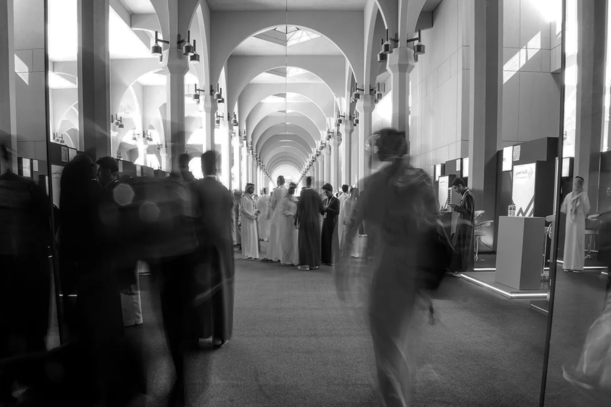

Inquiry Studio
مكتب الاستفسارات
تحليل استفسارات التصوير بالعربية والإنجليزية وإعداد مسودة للرد.

تُعالَج الرسالة داخل متصفحك، ويُحجب البريد ورقم الجوال السعودي في عرض التحليل.
نتيجة التحليل
Model Evaluation
أداء النموذج
نتائج اختبار على رسائل تعليمية من عملاء افتراضيين منفصلين عن التدريب والتحقق.
الأداء حسب نوع الطلب
مصفوفة الالتباس
الصف هو التصنيف الصحيح، والعمود هو التوقّع. تعرض كل خانة رسائل الاختبار المرتبطة بها.
الدقّة حسب شريحة الرسائل
استرجاع الرد المناسب
مقارنة نماذج التصنيف
كيف دُرّب النموذج وحُسبت النتائج؟
Reply Library
دليل الردود
ثمانية مراجع لاستفسارات التصوير، لكل منها صياغة عربية وإنجليزية.